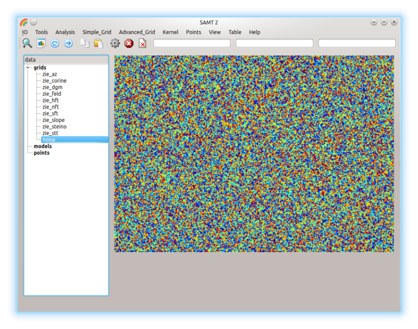
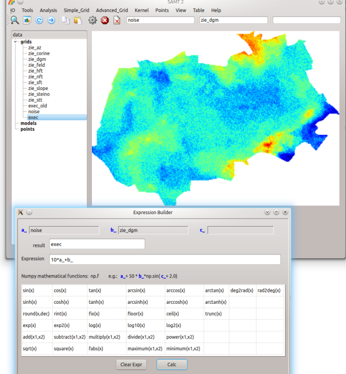
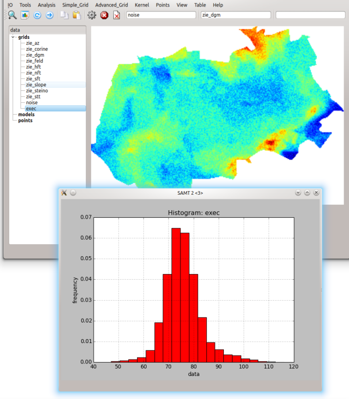
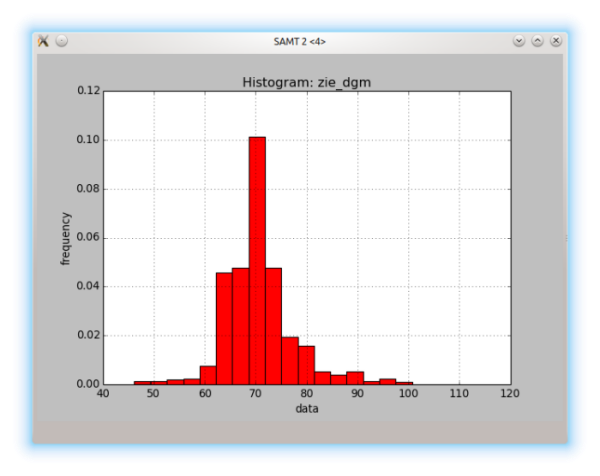
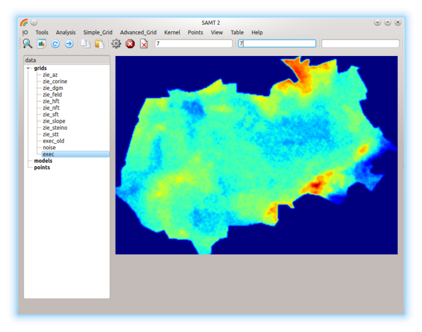
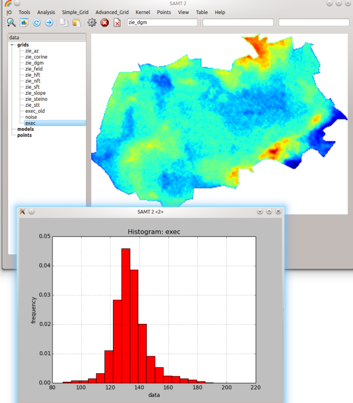

-
Copy the grid zie_dgm with P1=noise

-
Highlight grid noise, then
Simple_Grid: Rand_Float

-
Set P1=noise, P2=zie_dgm,
then Run the model with


-
Analysis: Histogram for result exec

-
Analysis: Histogram for zie_dgm

-
Simple_Grid: Replace with highlighted=exec, P1=-9999, P2=46
-
Kernel: Kernel_sci with highlighted=exec, P1=7, P2=7

-
Advanced_Grid: Combine_AND with highlighted=exec, P1=dgm
Analysis: Histogram with highlighted=exec

Back to top
Back